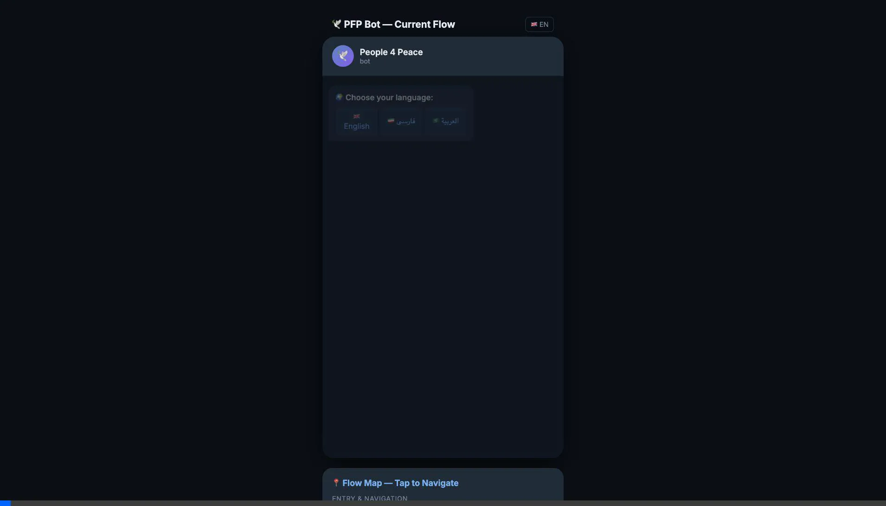
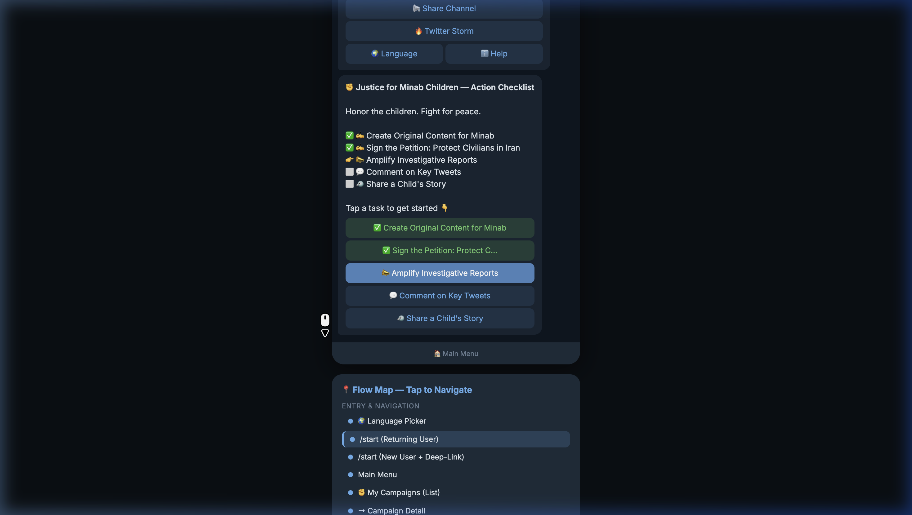
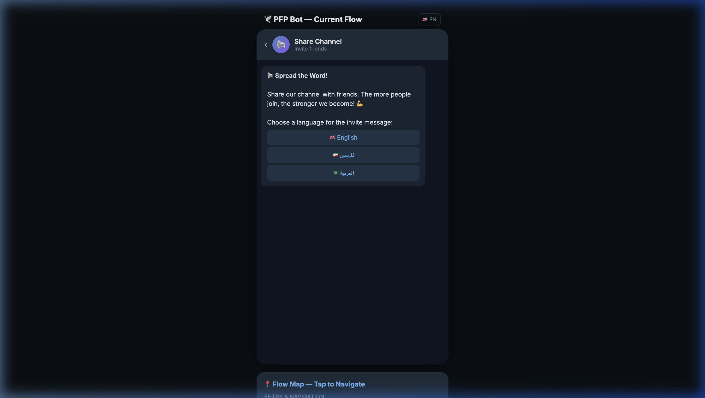
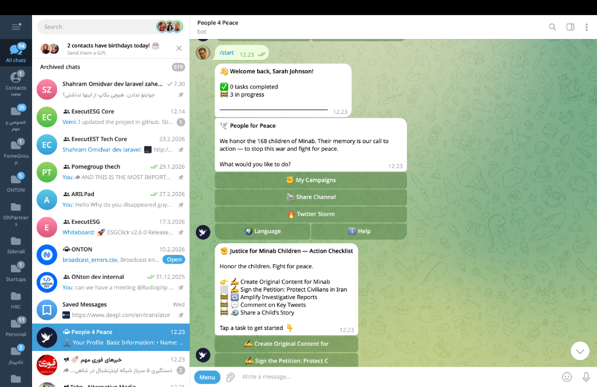

01Objective
To establish a precise, interactive baseline of the PFP bot's current UX. We audited the backend source code (`handlers/start.py`, `handlers/tasks.py`, `handlers/menu.py` etc.) and replicated it in a front-end HTML mockup for rapid design iteration and team review.
02Alignment Corrections & Discrepancies
We ran a side-by-side visual audit against the live bot and fixed the following layout / logic disparities in the mockup to ensure 100% parity:
| Area | Was (v1) | Live Bot Truth (v2 Fixed) |
|---|---|---|
| Main menu | My Campaigns, Profile, Storm, Help, Language |
My Campaigns, Share Channel, Twitter Storm, Language | Help |
| Welcome Message | Generic registration text | 👋 Welcome back, Name! + ✅ X completed / 🚧 X in progress |
| Checklist Emojis | All ⬜ (uncompleted) |
✅ done, 🚧 in-progress, 👉 next uncompleted, ⬜ rest |
| Task Priority Order | Alphabetical | Sorted by points: Content (30) → Email (20) → Story/Invite (15) → Petition/Comment/Amplify (10) → Like (5) |
| Checklist Filter | All 8 task types shown | Only 6 types auto-listed. Invite/Share shown differently. |
| Share Channel | Missing entirely | Full path: Language picker → Style picker → Ready-to-forward message |
03Visual Audit & Screens
Select screens generated during the mapping process and verification against the live server.

1
Live Bot Verification. The mockup (right) perfectly matches the logical flow, button layout, and terminology of the live production bot (left).

2
Action Checklist. Demonstrating correct emoji indicators (done, in-progress, next), task pointing, and the updated persistent menu.

3
Share Channel Feature. Full replication of the multi-style channel sharing options.

4
Campaign List & Detail. The UI for browsing active campaigns and viewing individual campaign scoreboards and descriptions.
04Screen Inventory
The interactive mockup contains 26 interconnected screens replicating the Django backend states:
- ✓ /start (New User)
- ✓ /start (Returning User)
- ✓ Language Selection
- ✓ Main Menu
- ✓ Campaign List
- ✓ Campaign Detail
- ✓ Core Checklist View
- ✓ Task: Content Creation
- ✓ Task: Mass Email
- ✓ Task: Share Story
- ✓ Task: Invite Friends
- ✓ Task: Sign Petition
- ✓ Task: Twitter Comment
- ✓ Task: Amplify Reports
- ✓ Share Channel (Select Language)
- ✓ Share Channel (Select Format)
- ✓ Share Channel (Result MSG)
- ✓ Twitter Storm Dashboard
- ✓ Action Verification Fake Delay
🔍 Explore the Full Architecture
Click through the 26-screen map to understand how tasks are distributed today.
🕹️ Launch Interactive Mockup